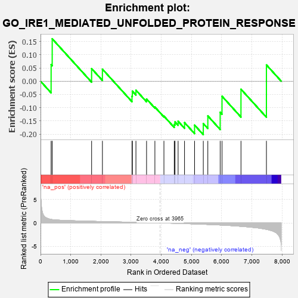
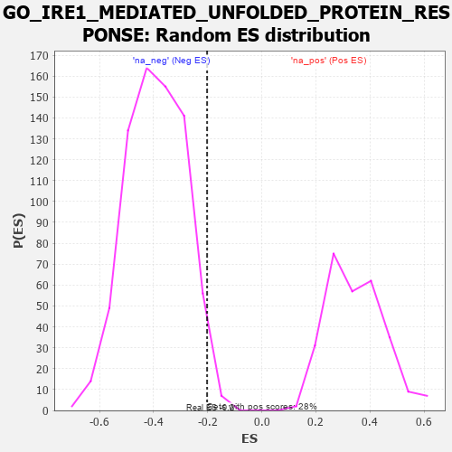

| | | Dataset | 7d |
| Phenotype | NoPhenotypeAvailable |
| Upregulated in class | na_neg |
| GeneSet | GO_IRE1_MEDIATED_UNFOLDED_PROTEIN_RESPONSE |
| Enrichment Score (ES) | -0.20209025 |
| Normalized Enrichment Score (NES) | -0.51517326 |
| Nominal p-value | 0.98199445 |
| FDR q-value | 1.0 |
| FWER p-Value | 1.0 |
Table: GSEA Results Summary

Fig 1: Enrichment plot: GO_IRE1_MEDIATED_UNFOLDED_PROTEIN_RESPONSE
Profile of the Running ES Score & Positions of GeneSet Members on the Rank Ordered List
| PROBE | GENE SYMBOL | GENE_TITLE | RANK IN GENE LIST | RANK METRIC SCORE | RUNNING ES | CORE ENRICHMENT | | 1 | GSK3A | | | 351 | 0.745 | 0.0627 | No |
| 2 | BAX | | | 387 | 0.711 | 0.1602 | No |
| 3 | HYOU1 | | | 1692 | 0.358 | 0.0476 | No |
| 4 | GOSR2 | | | 2050 | 0.298 | 0.0455 | No |
| 5 | TLN1 | | | 3030 | 0.145 | -0.0568 | No |
| 6 | UFL1 | | | 3041 | 0.144 | -0.0375 | No |
| 7 | ERN2 | | | 3160 | 0.129 | -0.0339 | No |
| 8 | PDIA6 | | | 3512 | 0.075 | -0.0672 | No |
| 9 | SRPRA | | | 3788 | 0.029 | -0.0976 | No |
| 10 | FICD | | | 4087 | -0.022 | -0.1320 | No |
| 11 | MYDGF | | | 4429 | -0.081 | -0.1632 | No |
| 12 | SYVN1 | | | 4454 | -0.085 | -0.1540 | No |
| 13 | CXXC1 | | | 4557 | -0.107 | -0.1515 | No |
| 14 | SRPRB | | | 4769 | -0.151 | -0.1563 | No |
| 15 | DDX11 | | | 5102 | -0.225 | -0.1659 | Yes |
| 16 | SSR1 | | | 5391 | -0.294 | -0.1600 | Yes |
| 17 | EDEM1 | | | 5541 | -0.331 | -0.1312 | Yes |
| 18 | DCTN1 | | | 5950 | -0.454 | -0.1174 | Yes |
| 19 | XBP1 | | | 6011 | -0.475 | -0.0568 | Yes |
| 20 | PDIA5 | | | 6639 | -0.734 | -0.0304 | Yes |
| 21 | VAPB | | | 7482 | -1.378 | 0.0615 | Yes |
Table: GSEA details [plain text format]

Fig 2: GO_IRE1_MEDIATED_UNFOLDED_PROTEIN_RESPONSE: Random ES distribution
Gene set null distribution of ES for GO_IRE1_MEDIATED_UNFOLDED_PROTEIN_RESPONSE